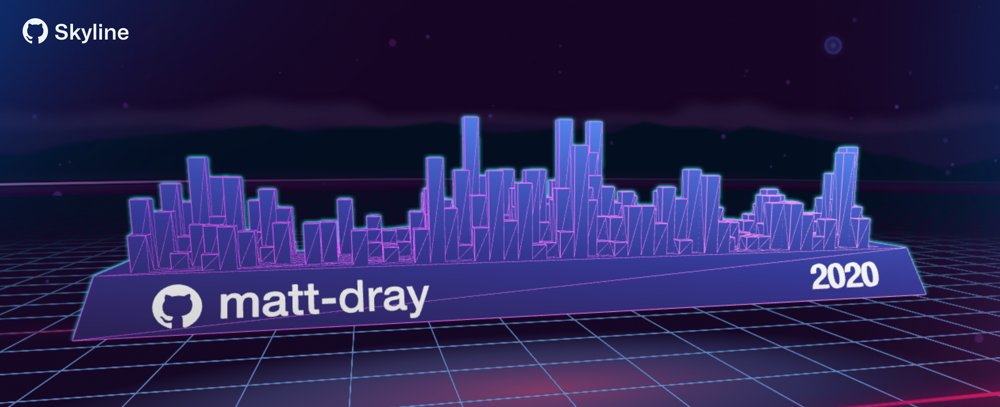
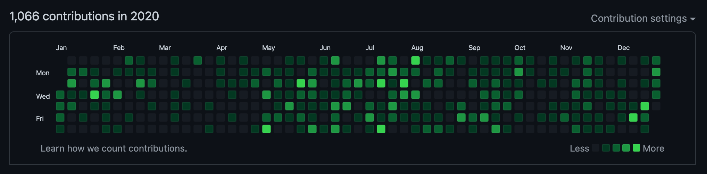
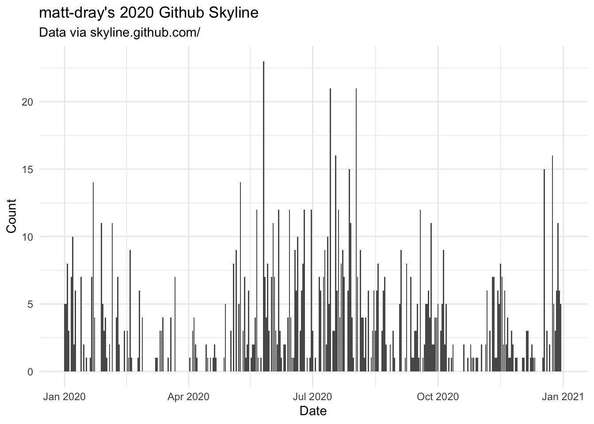
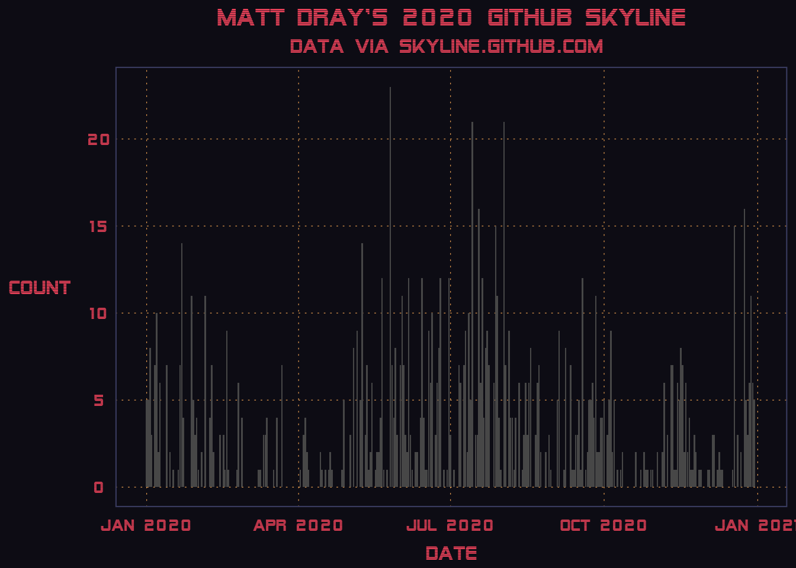

# install.packages("remotes")
remotes::install_github("matt-dray/skyphone")

My skyline clearly has a Central Business District with development in the suburbs.
tl;dr
I made the R package {skyphone} to get GitHub contributions data from GitHub Skyline and sonify it.
Note
The GitHub Skyline API–on which the {skyphone} package depends–stopped responding (i.e. it 404s) soon after this post was published. I may fix {skyphone} in future to work via {gh} instead; feel free to contribute.
Reach for the skyline
Skyline is an online curio from GitHub that lets you input a user’s name and get a 3D rendering of that user’s contributions to the platform. You can even download the object to 3D print it, I guess?
It’s basically the contributions heatmap from your profile, but with a bonus third dimension. And it’s on a plinth! That spins! And it’s happening inside Tron!

Why does it exist? Think Spotify Wrapped—a summary of users’ listening habits at the end of each year1—which results in lots of social-media shares and free marketing.2
Sounds of the city
I wrote recently about expressing a year’s worth of COVID-19 data in audio form. This process, called sonification, is made simple in R thanks to the {sonify} package.
Obviously it’s far lower stakes, but there’s no reason we can’t take a user’s GitHub contributions data and sonify that too.3 Is that useful? Maybe. Is it it much effort? Not really.
It turns out that Skyline has a simple API. Provide a URL in this form to get a JSON back:
https://skyline.github.com/api/contributions?username=username&year=2020This lends itself nicely to a simple R function that grabs the data for a given user in a given year. The counts over time can then be passed to sonification and plotting functions.
So… {skyphone}.
Pick up the {skyphone}
You can install the package from GitHub. It’s never going on CRAN.
There’s three functions: one to get the data, one to sonify it, and one to plot it. All functions are prefaced by sky_ for easy tab completion.
Get a dial tone
The sky_get() function takes a username and a year, which are used to generate an API string. The function fetches and tidies the resulting JSON from the call, generating a tidy tibble with a row of contributions per day.
library(skyphone)
md <- sky_get(user = "matt-dray", year = 2020)
md## # A tibble: 366 x 6
## user year week day date count
## <chr> <int> <int> <int> <date> <int>
## 1 matt-dray 2020 1 1 2020-01-01 5
## 2 matt-dray 2020 1 2 2020-01-02 5
## 3 matt-dray 2020 1 3 2020-01-03 8
## 4 matt-dray 2020 1 4 2020-01-04 3
## 5 matt-dray 2020 2 5 2020-01-05 0
## 6 matt-dray 2020 2 6 2020-01-06 7
## 7 matt-dray 2020 2 7 2020-01-07 10
## 8 matt-dray 2020 2 8 2020-01-08 2
## 9 matt-dray 2020 2 9 2020-01-09 6
## 10 matt-dray 2020 2 10 2020-01-10 0
## # … with 356 more rowsBy itself, this is a useful little function for the casual R user who doesn’t want to handle the JSON.
Hello?
The output from sky_get() can be passed to sky_sonify(), which converts the count of contributions over time to audio form: a WaveMC object.
sky_sonify(md, play = FALSE)##
## WaveMC Object
## Number of Samples: 220500
## Duration (seconds): 5
## Samplingrate (Hertz): 44100
## Number of channels: 2
## PCM (integer format): TRUE
## Bit (8/16/24/32/64): 16If you set the play argument to TRUE then you will hear the sonified result over your speakers. You can also provide a directory path to the out_dir argument to save the audio file as a .wav to a specified location.
The data I collected sound like this:
For amusement’s sake, 2016 is the year I joined GitHub and, well, that’s all that happened. We can fetch that year with sky_get() and then pipe that into sky_sonify(). I’ve saved the output file to my dekstop in this example.
library(magrittr) # to demo pipes in {skyphone}
sky_get("matt-dray", 2016) %>%
sky_sonify(play = FALSE, out_dir = "~/Desktop")Did you hear the momentous day on April 2?
Videophone
We’ve seen what a 3D skyline plot looks like; what about a good old fashioned 2D chart?
There’s a simple, opinionated plotting function in the package that you are welcome to use, called sky_plot(). Again, you can pass the earlier object from sky_get().
p <- sky_plot(md)
p
See how this looks like a skyline, but in 2D this time? Admittedly the ‘buildings’ are a little weird. Radio towers? Use your imagination, buddy.
For a final flourish, we can apply a ridiculous vaporwave-inspired theme to the plot. This retro aesthetic has been rinsed to death of late, so naturally it was used in the Skyline interface.4
The {vapoRwave} package has a number of themes we can choose.
# remotes::install_github("moldach/vapoRwave")
library(vapoRwave)
p + new_retro()
So… that’s it. But do join me in waiting for the first hospital admission of someone who trod on their 3D-printed skyline. It’s the risk you take.
Environment
Session info
Last rendered: 2023-07-17 21:29:23 BSTR version 4.3.1 (2023-06-16)
Platform: aarch64-apple-darwin20 (64-bit)
Running under: macOS Ventura 13.2.1
Matrix products: default
BLAS: /Library/Frameworks/R.framework/Versions/4.3-arm64/Resources/lib/libRblas.0.dylib
LAPACK: /Library/Frameworks/R.framework/Versions/4.3-arm64/Resources/lib/libRlapack.dylib; LAPACK version 3.11.0
locale:
[1] en_US.UTF-8/en_US.UTF-8/en_US.UTF-8/C/en_US.UTF-8/en_US.UTF-8
time zone: Europe/London
tzcode source: internal
attached base packages:
[1] stats graphics grDevices utils datasets methods base
loaded via a namespace (and not attached):
[1] htmlwidgets_1.6.2 compiler_4.3.1 fastmap_1.1.1 cli_3.6.1
[5] tools_4.3.1 htmltools_0.5.5 rstudioapi_0.15.0 yaml_2.3.7
[9] rmarkdown_2.23 knitr_1.43.1 jsonlite_1.8.7 xfun_0.39
[13] digest_0.6.31 rlang_1.1.1 fontawesome_0.5.1 evaluate_0.21 Reuse
CC BY-NC-SA 4.0